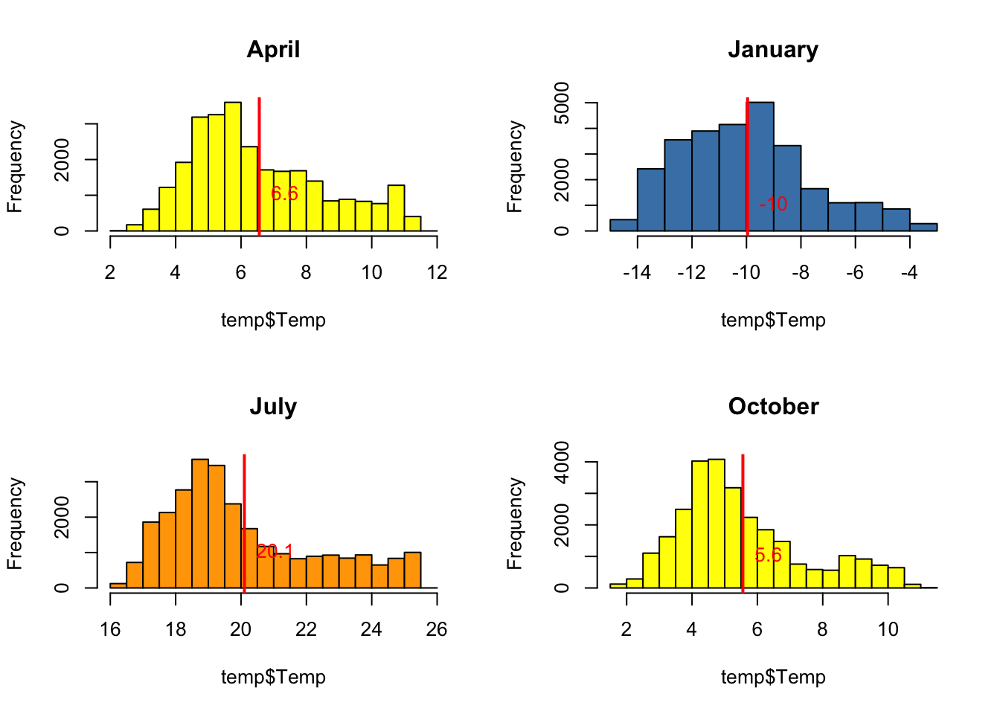
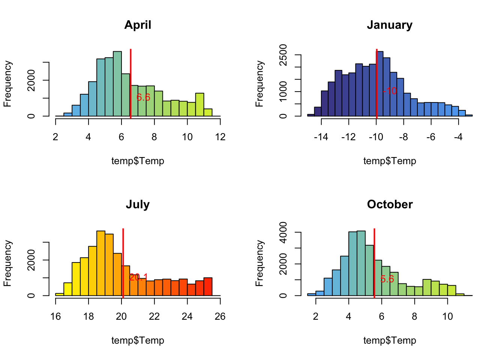

Глава 4 Техники программирования
В предыдущих разделах мы обходились базовыми средствами языка R и применяли стандартные функции для решения простых задач (аналогичных тем, что традиционно решаются в табличных редакторах типа Excel). В данном модуле рассматриваются техники программирования, которые упрощают решение вычислительных задач, такие как:
- Функциональное программирование
- Метапрограммирование
- Трансляция переменных (пайп-оператор)
4.1 Функциональное программирование
Функции в R можно использовать для структурирования кода на логически завершенные, автономные фрагменты кода, каждый из которых выполняет конкретную задачу. Чем сильнее разрастается ваш программный код, тем больше проявляется потребность в наличии функций. Функции позволяют использовать один и тот же код в разных местах программы, не повторяя его.
Синтаксис функции выглядит следующим образом:
functionName <- function(parameter1, parameter2, ...){
...
return(result)
}Функция создается c помощью ключевого слова function, за которым в круглых скобках заключается произвольное количество параметров (столько, сколько вам нужно: от нуля и более). С помощью этих параметров вы сможете передавать внутрь функции значения переменных. Созданной функции необходимо дать имя, используя оператор присвоения <-. После того как выполнится код внутри функции, результат можно вернуть, используя ключевого слово return.
R не поддерживает возврат множественных результатов. Если вам необходимо вернуть несколько объектов (переменных, векторов, таблиц и т.д.), создайте список (list), включите в него все возвращаемые объекты и верните из функции этот список.
В вышеприведенном примере мы использовали проверку условия для того чтобы вычислить рекомендуемый цвет гистограммы. С одной стороны, это некая вспомогательная процедура, не имеющая непосредственного отношения к построению гистограммы. С другой стороны, это полезная процедура, которой мы захотим воспользоваться в дальнейшем — всегда приятно, когда программа тебе с выбором стилей оформления данных2.
Оформим выбор цвета в виде функции, которая принимает в каестве параметра число (температуру), а возвращает название цвета.
## ФУНКЦИИ
library(foreign) # для чтения dbf необходима библиотека foreign
files <- list.files("dbf") # прочитаем список файлов в директории dbf
files <- files[grep(".dbf", files, fixed = TRUE)] # отфильтруем файлы с расширением .dbf
names <- sub(".dbf","",files) # получим названия месяцев, избавившись от расширений
i <- 1 # Создадим дополнительно переменную цикла, чтобы выбирать i-е название месяца
# Создадим функцию, возвращающую цвет в зависимости от температуры
selectColor <- function(value) {
hist.col <- "white"
if (tmean < 0){
hist.col <- "steelblue"
} else if (tmean < 10){
hist.col <- "yellow"
} else {
hist.col <- "orange"
}
return(hist.col)
}
i <- 1
par(mfrow = c(2,2))
for (file in files) {
temp <- read.dbf(file)
tmean <- mean(temp$Temp)
# выберем цвет с помощью нашей функции
hist.col <- selectColor(tmean)
# построим гистограмму
hist(temp$Temp,
col = hist.col,
main = names[i])
# добавим линию среднего
abline(v = tmean,
lwd = 2,
col = "red")
# подпишем среднее
text(tmean,
1000,
labels = round(tmean,1),
pos = 4,
col = "red")
i <- i+1
}
Усложним задачу, чтобы показать, как работать с несколькими аргументами функции. Например, мы хотим не одноцветные диаграммы, а чтобы цвет менялся плавным градиентом от первого столбика гистограммы до последнего. Соответственно, количество возвращаемых цветов должно быть равно количеству столбиков в гистограмме. Нашей функции не важно, столбики это или нет, но ей надо знать, сколько цветов надо вернуть. Для этого добавим в нее второй параметр ncolors. Это позволит пользователю при желании не задвать этот параметр, если необходим только один цвет.
# ГИСТОГРАММЫ С ГРАДИЕНТОМ
selectColor2 <- function(value, ncolors){ # передаем в качестве дополнительного параметра количество цветов
hist.col <- "white"
# генерируем ncolors цветов из соответствующей палитры
if (tmean < 0){
hist.col <- colorRampPalette(c("darkslateblue", "steelblue1"))(ncolors)
} else if (tmean < 10){
hist.col <- colorRampPalette(c("steelblue1", "yellow"))(ncolors)
} else {
hist.col <- colorRampPalette(c("yellow", "red"))(ncolors)
}
return(hist.col)
}
i <- 1
par(mfrow = c(2,2))
ncells <- 25 # установим фиксированное количество столбцов гистограммы
for (file in files){
temp <- read.dbf(file)
tmean <- mean(temp$Temp)
# получим для раскраски требуемое количество цветов
hist.col <- selectColor2(tmean, ncells)
# построим гистограмму
hist(temp$Temp,
col = hist.col,
main = names[i],
breaks = ncells)
# добавим линию среднего
abline(v = tmean,
lwd = 2,
col = "red")
# подпишем среднее
text(tmean, 1000,
labels = round(tmean,1),
pos = 4,
col = "red")
i <- i+1
}
4.2 Метапрограммирование
4.3 Векторизованые вычисления
Данные (в том числе географические) практически всегда носят множественный характер и организованы в определенные структуры (см. главу 2). Эта особенность данных выдвигает логичное желание иметь процедуры, которые можно применять к полному набору данных, а не к его отдельным компонентам. Это и есть процедуры векторизованных высчислений.
Предположим, вам необходимо что-то вычислить для каждой строки таблицы, при этом порядок вычисления зависит от содержимого ячеек данной строки. Вы можете организовать подобные вычисления с помощью циклов, однако в R существуют специальные функции семейста apply, которые позволяют решать подобные задачи более элегантно и с высокой скоростью. Это достигается за счет того, что функции apply написаны на языке C (как и многие другие функции R), в то время как при организации цикла ваши данные будут обрабатываться стандартными средствами языка.
| Функция | Назначение |
|---|---|
apply() |
применить функцию ко всем строкам или столбцам матрицы |
lapply() |
применить функцию к каждому компоненту вектора или списка и получить результат также в виде списка (l — list) |
sapply() |
применить функцию к каждому компоненту вектора или списка и получить результат в виде вектора (s — simplify) |
vapply() |
аналогична vapply, но требует явного задания типа данных возвращаемого вектора, за счет чего работает быстрее (v — velocity) |
mapply() |
применить функцию к каждому компоненту нескольких векторов или списков и вернуть результат в виде списка (m — multivariate) |
rapply() |
применить функцию рекурсивно ко всем элементам переданного списка и вернуть результат в аналогичной структур (r — recursive) |
tapply() |
применить функцию ко всем компонентам вектора или списка, сгруппировав их по значению переданного фактора |
Функции семейства
apply, принимающие на вход списки, могут работать и с фреймами данных. В этом случае фрейм внутри функции будет преобразован с помощью функцииas.list()в список, элементами которого являются столбцы (переменные) входного фрейма данных. Данные при этом не потеряются, их типы тоже не изменятся.
Базовая функция apply() имеет следующие аргументы:
X— массив любой размерности (включая вектор)MARGIN— измерения по которым необходимо вести вычисления. Для матрицы1означает строку,2означает столбец,c(1, 2)будет означать, что вычисления производятся по всем комбинациям строк и столбцовFUN— функция, которая будет применяться к каждому элементу указанных измерений
Рассмотрим, как можно вычислять значения по строкам. У нас есть подготовленная таблица Росстата Выбросы в атмосферу загрязняющих веществ, отходящих от стационарных источников, по видам экономической деятельности. Рассчитаем, какой тип источника занимает максимальное и минимальное место среди газообразных и жидких. Обратите внимание, что в первом случае используется заранее созданная функция, а во втором мы определяем анонимную функцию непосредственно при вызове apply():
## ВЕКТОРИЗОВАННЫЕ ВЫЧИСЛЕНИЯ
library(dplyr)
##
## Присоединяю пакет: 'dplyr'
## Следующие объекты скрыты от 'package:stats':
##
## filter, lag
## Следующие объекты скрыты от 'package:base':
##
## intersect, setdiff, setequal, union
df <- read.csv2("atm_emissions.csv")
head(df)
## YEAR TOTAL SOLID FLGAS SO NO CO CH ORG
## 1 1992 28207.6 5609.1 22598.5 8171.3 2718.1 6813.0 2583.9 1608.9
## 2 1993 24788.3 4746.1 20042.2 7217.9 2462.0 5894.0 2386.7 1604.8
## 3 1994 21929.1 3870.2 18058.9 6512.5 2085.2 5140.8 2609.3 1238.0
## 4 1995 21269.6 3600.4 17669.2 6424.8 1996.6 5005.6 2735.7 1110.9
## 5 1996 20274.1 3233.4 17040.8 6156.7 1920.4 4876.6 2531.3 1161.8
## 6 1997 19332.9 3041.8 16291.1 5991.1 1799.7 4653.0 2554.2 989.9
find.max <- function(x) {
return(names(x)[which.max(x)])
}
df$MAXSRC <- apply(df[5:9], 1, find.max)
df$MINSRC <- apply(df[5:9], 1, function(x) names(x)[which.min(x)])
print(df)
## YEAR TOTAL SOLID FLGAS SO NO CO CH ORG MAXSRC
## 1 1992 28207.6 5609.1 22598.5 8171.3 2718.1 6813.0 2583.9 1608.9 SO
## 2 1993 24788.3 4746.1 20042.2 7217.9 2462.0 5894.0 2386.7 1604.8 SO
## 3 1994 21929.1 3870.2 18058.9 6512.5 2085.2 5140.8 2609.3 1238.0 SO
## 4 1995 21269.6 3600.4 17669.2 6424.8 1996.6 5005.6 2735.7 1110.9 SO
## 5 1996 20274.1 3233.4 17040.8 6156.7 1920.4 4876.6 2531.3 1161.8 SO
## 6 1997 19332.9 3041.8 16291.1 5991.1 1799.7 4653.0 2554.2 989.9 SO
## 7 1998 18661.8 2864.4 15797.4 5679.3 1753.3 4562.9 2571.6 921.9 SO
## 8 1999 18539.7 2768.4 15771.2 5505.5 1716.4 4663.9 2767.7 831.0 SO
## 9 2000 18819.8 2972.2 15847.6 5407.1 1698.4 4997.9 2685.4 850.4 SO
## 10 2001 19123.6 2973.2 16150.4 5254.0 1678.9 5148.1 2723.6 1130.8 SO
## 11 2002 19481.2 2882.8 16598.4 4987.4 1646.2 5857.5 2733.2 1164.8 CO
## 12 2003 19829.4 2868.0 16961.4 4959.6 1661.8 5929.4 2834.1 1356.5 CO
## 13 2004 20491.3 2855.7 17635.6 4768.4 1628.9 6774.4 2786.8 1448.2 CO
## 14 2005 20425.4 2802.0 17623.3 4675.0 1666.8 6521.2 2868.1 1650.6 CO
## 15 2006 20568.4 2842.8 17725.6 4764.7 1703.1 6338.3 2815.0 1863.1 CO
## 16 2007 20636.9 2743.4 17893.5 4573.1 1732.8 6448.4 2992.4 1908.6 CO
## 17 2008 20103.3 2704.2 17399.0 4534.1 1816.6 6091.5 3217.5 1532.0 CO
## 18 2009 19021.2 2341.1 16680.1 4370.6 1730.5 5500.5 3347.3 1546.0 CO
## 19 2010 19115.6 2381.2 16734.4 4385.3 1855.2 5565.1 3135.9 1605.3 CO
## 20 2011 19162.3 2283.1 16879.2 4342.7 1880.0 5753.5 3105.8 1622.8 CO
## 21 2012 19630.3 2249.4 17380.9 4340.9 1937.5 6001.8 3293.3 1638.2 CO
## 22 2013 18446.5 2008.5 16438.0 4173.3 1874.2 5350.9 3424.8 1455.8 CO
## 23 2014 17451.9 1922.2 15529.7 4036.3 1805.5 4938.4 3251.0 1340.0 CO
## 24 2015 17295.7 1820.4 15475.3 4099.4 1787.4 4799.6 3323.0 1294.5 CO
## 25 2016 17349.3 1723.9 15625.4 4011.4 1830.1 4907.1 3406.1 1304.6 CO
## MINSRC
## 1 ORG
## 2 ORG
## 3 ORG
## 4 ORG
## 5 ORG
## 6 ORG
## 7 ORG
## 8 ORG
## 9 ORG
## 10 ORG
## 11 ORG
## 12 ORG
## 13 ORG
## 14 ORG
## 15 NO
## 16 NO
## 17 ORG
## 18 ORG
## 19 ORG
## 20 ORG
## 21 ORG
## 22 ORG
## 23 ORG
## 24 ORG
## 25 ORGДругие функции семейства apply в приложении к фреймам данных будут работать со столбцами (переменными), интерпретируя их как элементы списка. Наиболее часто из них используются lapply(), sapply() и vapply().В отличие от apply(), они уже не принимаеют номера измерений и работают только с элементами переданного списка. Например, мы можем посчитать среднее значение объема выбросов по каждому источнику. Поскольку функция среднего уже есть в составе базовых средств R, достаточно указать ее при вызове sapply():
sapply(df, mean)
## Warning in mean.default(X[[i]], ...): аргумент не является числовым или
## логическим: возвращаю NA
## Warning in mean.default(X[[i]], ...): аргумент не является числовым или
## логическим: возвращаю NA
## YEAR TOTAL SOLID FLGAS SO NO CO
## 2004.000 19998.208 2884.316 17113.884 5173.696 1855.424 5541.336
## CH ORG MAXSRC MINSRC
## 2907.348 1367.176 NA NAВ данном случае для первого столбца было возвращено значение NA, что логично, поскольку он имеет строковый тип.
В качестве альтернативы функциям apply можно также воспользоваться вычислениями посредством функций семейства map из пакета purrr (еще один пакет из tidyverse). Эти функции работают аналогично lapply() и поддерживают последовательности с помощью пайп-оператора:
map()возвращает список.map_lgl()возвращает вектор логических значений.map_int()возвращает вектор целочисленных значений.map_dbl()возвращает вектор чисел с плавающей точкой.map_chr()возвращает вектор строк.
Например, предыдущая задача с помощью purrr решались бы так:
library(purrr)
map_dbl(df, mean)
## Warning in mean.default(.x[[i]], ...): аргумент не является числовым или
## логическим: возвращаю NA
## Warning in mean.default(.x[[i]], ...): аргумент не является числовым или
## логическим: возвращаю NA
## YEAR TOTAL SOLID FLGAS SO NO CO
## 2004.000 19998.208 2884.316 17113.884 5173.696 1855.424 5541.336
## CH ORG MAXSRC MINSRC
## 2907.348 1367.176 NA NA4.4 Грамматика табличных преобразований
Пакет dplyr был разработан для того чтобы сделать стандартные операции обработки фреймов данных, такие как сортировка, фильтрация, выбор и добавление переменных (столбцов), агрегирование данных более простым и наглядным.
Пакет очень включает в себя 5 базовых функций:
| Функция | Назначение |
|---|---|
mutate() |
Вычисление новых переменных |
select() |
Выбор переменных по их названиям |
filter() |
Выбор строк по заданному критерию (запросу) |
summarise() |
Агрегирование значений переменных |
arrange() |
Упорядочение фрейма данных по указанным переменным |
Данные функции можно комбинировать также с функцией group_by() чтобы выполнять операции не надо всеми строками сразу, а над их группами, сгруппированными по значению выбранной переменной.
Предположим, нам необходимо отобрать из уже знакомой нам таблицы tab столбцы Year, Total, Caspian, далее вычислить долю Каспийского моря в суммарном объеме сточных вод, отобрать строки, в которых эта доля больше \(0.45\) и упорядочить получившуюся таблицу по возрастанию этой доли. Дополнительно еще посчитаем суммарный сброс и среднюю долю Каспийского мор:
library(dplyr)
tab <- read.csv2("oxr_vod.csv")
colnames(tab) <- c("Year", "Total", "Baltic", "Black", "Azov", "Caspian", "Kara", "White", "Other")
# Выбор переменных Year, Total, Caspian
caspian <- select(tab, Year, Total, Caspian)
head(caspian)
## Year Total Caspian
## 1 1993 27.2 12.1
## 2 1994 24.6 11.0
## 3 1995 24.5 10.4
## 4 1996 22.4 9.8
## 5 1997 23.0 9.8
## 6 1998 22.0 9.5
# Вычисление нового столбца caspianRatio
caspian <- mutate(caspian, caspianRatio = round(Caspian / Total, 3))
head(caspian)
## Year Total Caspian caspianRatio
## 1 1993 27.2 12.1 0.445
## 2 1994 24.6 11.0 0.447
## 3 1995 24.5 10.4 0.424
## 4 1996 22.4 9.8 0.438
## 5 1997 23.0 9.8 0.426
## 6 1998 22.0 9.5 0.432
# Фильтрация по значению caspianRatio
caspian <- filter(caspian, caspianRatio > 0.445)
head(caspian)
## Year Total Caspian caspianRatio
## 1 1994 24.6 11.0 0.447
## 2 2000 20.3 9.2 0.453
## 3 2001 19.8 8.9 0.449
## 4 2002 19.8 9.2 0.465
## 5 2004 18.5 8.3 0.449
## 6 2005 17.7 8.0 0.452
# Сортировка по значению caspianRatio
caspian <- arrange(caspian, caspianRatio)
head(caspian)
## Year Total Caspian caspianRatio
## 1 2006 17.5 7.8 0.446
## 2 2012 15.7 7.0 0.446
## 3 1994 24.6 11.0 0.447
## 4 2001 19.8 8.9 0.449
## 5 2004 18.5 8.3 0.449
## 6 2005 17.7 8.0 0.452
# Агрегирование данных
stats <- summarise(caspian, total.sum = sum(Total), mean.ratio = mean(caspianRatio))
print(stats)
## total.sum mean.ratio
## 1 169.1 0.4512222Обратите внимание на то, что названия столбцов указываются без кавычек! Использование dplyr целым обладает рядом преимуществ по сравнению с применением стандартных средств R:
- вызов функций с говорящими названиями операции более понятными;
- код выглядит более чистым и легко читаемым за счет отсутствия обращений к фреймам данных через квадратные скобки и доллары;
- код с использованием функций dplyr часто оказывается короче, чем его традиционные аналоги;
- операции dplyr можно выстраивать в последовательности с помощью пайп-оператора
%>%, доступного в R через пакет magrittr (устанавливается вмете с dplyr.
4.5 Пайпирование
Пайп-оператор %>% предназначен для компактной и наглядной записи последовательностей обработки данных. Например, выше мы применили целых 4 операции к исходной таблице (select, mutate, filter, arrange), прежде чем получить искомый результат. Промежуточные результаты нас мало интересовали, при этом мы каждый раз перезаписывали исходную таблицу (могли и новую делать каждый раз, что сделало бы код еще более громоздким). С помощью пайп-оператора %>% вышеприведенный код можно записать так:
result <- tab %>%
select(Year, Total, Caspian) %>%
mutate(caspianRatio = round(Caspian / Total, 3)) %>%
filter(caspianRatio > 0.445) %>%
arrange(caspianRatio)
head(result)
## Year Total Caspian caspianRatio
## 1 2006 17.5 7.8 0.446
## 2 2012 15.7 7.0 0.446
## 3 1994 24.6 11.0 0.447
## 4 2001 19.8 8.9 0.449
## 5 2004 18.5 8.3 0.449
## 6 2005 17.7 8.0 0.452Обратите внимание, что мы уже не подставляли исходный фрейм данных в качестве первого параметра при вызове функций dplyr, а направляли его посредством пайп-оператора. Этот оператор работает следующим образом:
x %>% fэквивалентноf(x)x %>% f(y)эквивалентноf(x, y)x %>% f %>% g %>% hэквивалентноh(g(f(x)))
В частности, первая операция select(tab, Year, Total, Caspian) была нами переписана в виде tab %>% select(Year, Total, Caspian). Если бы мы попытались написать ту же последовательность операций одним выражением в традиционной парадигме, это выглядело бы вот так:
result <- arrange(
filter(
mutate(
select(tab, Year, Total, Caspian),
caspianRatio = round(Caspian / Total, 3)
),
caspianRatio > 0.445
),
caspianRatio
)Согласитесь, ненаглядно и несколько устрашающе? К тому же, читать такой код надо задом наперед (изнутри наружу), чтобы понять последовательность действий. Синтаксис с использованием пайп-оператора позволяет:
- упорядочить операции по обработке данных слева направо (в противоположность направлению изнутри наружу);
- избежать вложенных вызовов функций (матрёшки);
- минимизировать количество переменных для храненния промежуточных результатов;
- упростить добавление новых операций по обработке данных в любое место последовательности.
Таким образом, можно рекомендовать пакет dplyr в качестве стандартного средства манипуляции фреймами данных, особенно когда речь идет о большом количестве преобразований. При этом последовательности преобразований, в которых промежуточные результаты нигде больше не используются, следует оформлять одним выражением с использованием пайп-оператора %>%.
Пайп-оператор
%>%можно быстро набрать в RStudio, нажав клавиатурное сочетание Ctrl + Shift + M (Cmd + Shift + M на компьютерах Mac)
4.6 Контрольные вопросы и задачи
- Что такое функция и для каких сценариев обработки данных могут быть полезны функции?
- Может ли функция возвращать более одного значения? Что необходимо сделать, чтобы реализовать такую возможность?
- Что такое векторизованные вычисления?
- Перечислите функции семейства
applyи задачи, которые они позволяют решить. - Какая функция семейства
applyпозволяет выполнять вычисления не только по столбцам, но и по строкам? - Можно ли передавать в функции семейства
applyфреймы данных? Если да, то как интерпретируются такие данные? - Какой пакет R позволяет выполнять векторизованные вычисления в более простой и быстрой форме, чем функции семейства
apply? Можно ли с помощью него выполнять вычисления по строкам?
4.6.1 Вопросы
4.6.2 Задачи
| Самсонов Т.Е. Визуализация и анализ географических данных на языке R. М.: Географический факультет МГУ, 2017. DOI: 10.5281/zenodo.901911 |
в картографии это называется “smart mapping”, что переводят как “умное картографирование”, хотя это и не самый удачный вариант перевода↩